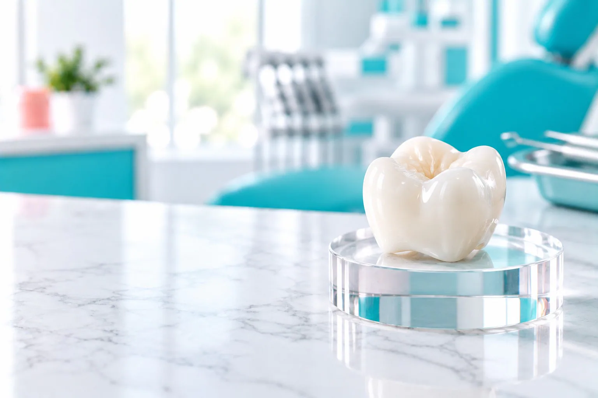
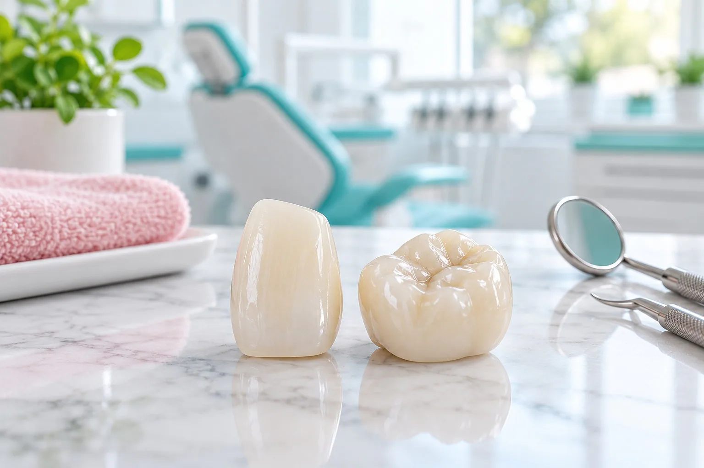
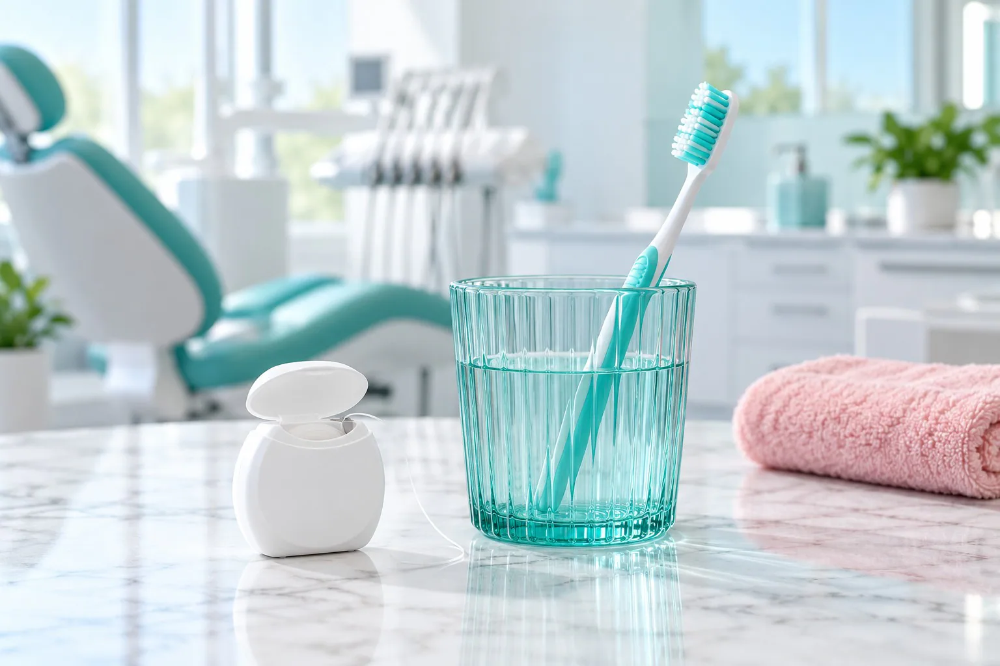
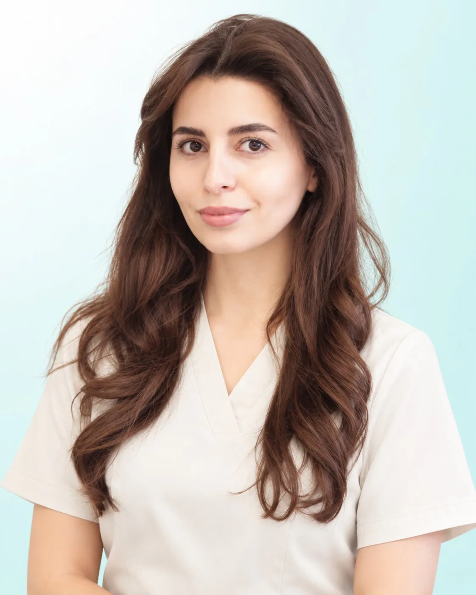

Зуб сильно разрушен
Своих стенок осталось мало, и пломба не будет держаться.

Коронка на зуб в стоматологии «Вайтис» в Одинцово: циркониевая, от 28 000 ₽.
Ортопед покрывает коронкой сильно разрушенный зуб: лечение и подготовка, сканирование челюсти (3 000 ₽), примерка и фиксация. Клиника на ул. Северная, 5 к4 (ЖК «Одинбург»), приём ежедневно с 9:00 до 21:00.
Имеются противопоказания. Необходима консультация специалиста.
Сколько стоит поставить коронку на зуб: циркониевая коронка от 28 000 ₽, сканирование челюсти 3 000 ₽.
Если зуб нужно сначала лечить, это оплачивается отдельно; итоговую сумму ортопед называет в плане лечения.
Скидка 5% многодетным семьям и пенсионерам. Лечение можно оплатить частями, условия подскажет администратор. Выдаём документы для налогового вычета 13%.
Имеются противопоказания. Необходима консультация специалиста.
Сколько стоит поставить коронку на зуб: циркониевая коронка от 28 000 ₽, сканирование челюсти 3 000 ₽. Если зуб нужно сначала лечить, это оплачивается отдельно; итоговую сумму ортопед называет в плане лечения.
| Услуга | Когда нужна | Цена |
|---|---|---|
| Циркониевая коронка на зуб | на свой зуб, передний или жевательный | от 28 000 ₽ |
| Сканирование 1 челюсти | цифровая модель зубов для изготовления | 3 000 ₽ |
Скидка 5% многодетным семьям и пенсионерам. Лечение можно оплатить частями, условия подскажет администратор. Выдаём документы для налогового вычета 13%.
Имеются противопоказания. Необходима консультация специалиста.
На какие зубы ставят коронки: на передние и жевательные, если пломбой или реставрацией зуб уже не восстановить. Если стенок осталось достаточно, врач предложит пломбу.
Своих стенок осталось мало, и пломба не будет держаться.
Зуб без нерва становится хрупким, коронка защищает его от раскола.
Откололась большая часть зуба или по нему пошла трещина.
Восстановление зуба коронкой, когда пломбой форму и цвет уже не вернуть.
На какие зубы ставят коронки: на передние и жевательные, если пломбой или реставрацией зуб уже не восстановить. Если стенок осталось достаточно, врач предложит пломбу.
Своих стенок осталось мало, и пломба не будет держаться.
Зуб без нерва становится хрупким, коронка защищает его от раскола.
Откололась большая часть зуба или по нему пошла трещина.
Восстановление зуба коронкой, когда пломбой форму и цвет уже не вернуть.
Если зуба нет, ставят имплант, а на него коронку на имплант (от 36 000 ₽). Детям коронки на молочные зубы ставит детский стоматолог.

В клинике ставим циркониевые коронки. Цирконий: керамический материал, такая керамическая коронка подходит и на передние, и на жевательные зубы.
Оттенок коронки ортопед подбирает по соседним зубам.
Цирконий прочный, поэтому подходит для жевательных зубов. Форму жевательной поверхности моделируют по скану.
Циркониевую коронку на имплант ортопед ставит после того, как имплант прижился.
Другие конструкции, если зуба нет или зубов не хватает много: виды зубных протезов.
Коронку ставят за несколько визитов: подготовка, скан, примерка и фиксация.
Ортопед осматривает зуб, смотрит снимок и решает, нужна ли коронка.
Если нужно, терапевт сначала лечит зуб, например лечение каналов.
Под местной анестезией ортопед обтачивает зуб под коронку.
Ортопед сканирует челюсть (3 000 ₽), по цифровой модели изготавливают коронку. На время изготовления постоянной коронки врач может закрыть зуб временной.
Ортопед примеряет коронку, проверяет цвет и прикус и фиксирует её на зуб.
Коронку ставят за несколько визитов: подготовка, скан, примерка и фиксация.
Ортопед осматривает зуб, смотрит снимок и решает, нужна ли коронка.
Если нужно, терапевт сначала лечит зуб, например лечение каналов.
Под местной анестезией ортопед обтачивает зуб под коронку.
Ортопед сканирует челюсть (3 000 ₽), по цифровой модели изготавливают коронку. На время изготовления постоянной коронки врач может закрыть зуб временной.
Ортопед примеряет коронку, проверяет цвет и прикус и фиксирует её на зуб.
Причины разные: воспаление нерва или тканей у корня, завышенная коронка, из-за которой зуб перегружается при жевании, кариес у края коронки, воспаление десны. Причину врач определяет после осмотра и снимка, поэтому при боли стоит записаться на приём.
При боли под коронкой лучше сразу записаться на приём.
По снимку врач видит, что происходит у корня.
Только по назначению врача.

За коронкой ухаживают как за своими зубами: чистите зубы дважды в день, у края коронки используйте зубную нить или ёршики. Раз в полгода приходите на профессиональную чистку зубов и осмотр.
Коронки ставят ортопеды клиники Чилингарян А. А. и Амирасланов Э. Ф., оба врача также хирурги.
Из чего складывается цена коронки?
Циркониевая коронка от 28 000 ₽, сканирование челюсти 3 000 ₽. Если зуб нужно сначала лечить, это оплачивается отдельно; итоговую сумму ортопед называет в плане лечения.
Какие коронки ставят в «Вайтис»?
Циркониевые: на передние и жевательные зубы. Подходит ли коронка вашему зубу, ортопед скажет после осмотра и снимка.
Больно ли ставить коронку?
Подготовку зуба проводят под местной анестезией, если она нужна. Примерка и фиксация обычно проходят без неё.
Сколько делают коронку?
Срок зависит от количества коронок и подготовки зуба, его называет ортопед.
Почему болит зуб под коронкой?
Причины разные: воспаление нерва или тканей у корня, завышенная коронка, кариес у края коронки, воспаление десны. Причину врач определяет после осмотра и снимка, поэтому при боли стоит записаться на приём.
Ставят ли коронку на живой зуб?
Да, если зуб сильно разрушен, а нерв здоров. Нужно ли перед коронкой лечить каналы, врач решает по снимку.
Имеются противопоказания. Необходима консультация специалиста.
Каждая услуга открывается отдельной страницей с ценами, этапами лечения и ответами на вопросы. Нажмите на название, чтобы прочитать.
Запишитесь к ортопеду: осмотр и план лечения
Записаться к ортопедуАдрес и как добраться. ул. Северная, 5 к4 (ЖК «Одинбург»). МЦД-1 «Одинцово», автобусы и маршрутки до остановки «Комбинат бытового обслуживания», дальше пешком по Северной. Приём ежедневно с 9:00 до 21:00.
Имеются противопоказания. Необходима консультация специалиста.
Перезвоним, подберём врача и удобное время.
Оставьте номер, администратор перезвонит и ответит на вопросы.
Подойдёт КТ, панорама, прицельный снимок или фото плана лечения из другой клиники. Врач посмотрит и ответит в течение рабочего дня. Это бесплатно.
Хирург, ортопед и терапевт осмотрят вас вместе, сделаем КТ. Консультация бесплатная, стоимость лечения врач назовёт после осмотра.
Врачи клиники
 ТерапевтЕлена
ТерапевтЕлена
Детский врачКристина ХирургАкоб
ХирургАкобПервый визит бесплатно
Врач осмотрит, при необходимости сделает снимок и назовёт цену лечения. Оставьте номер, администратор перезвонит и подберёт время.
Консультация с осмотром под микроскопом бесплатно
Ежедневно с 9:00 до 21:00.